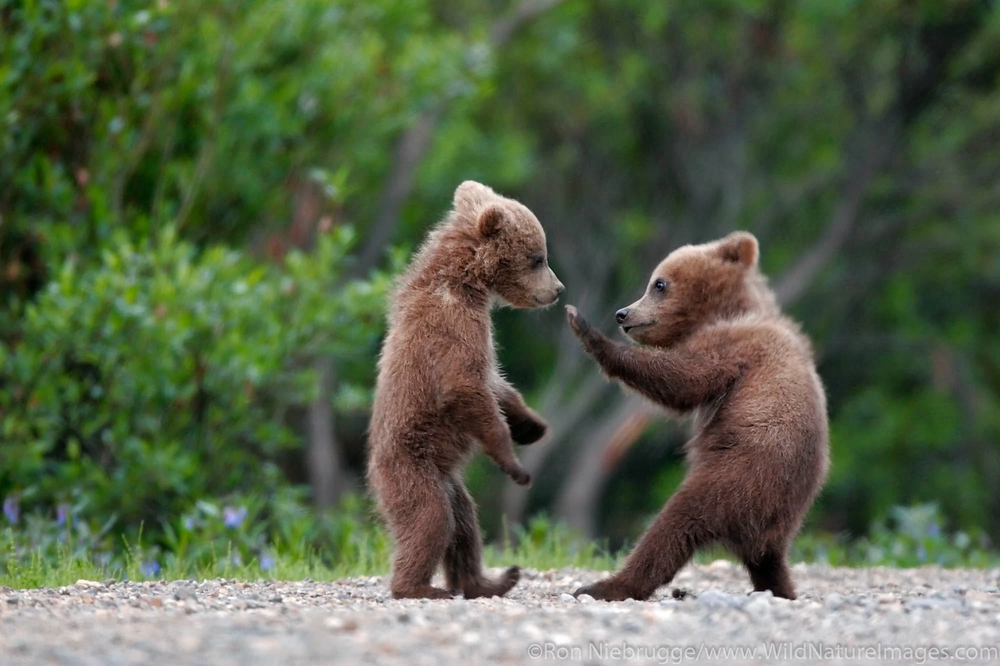
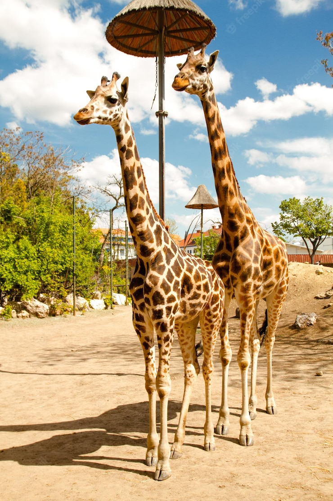
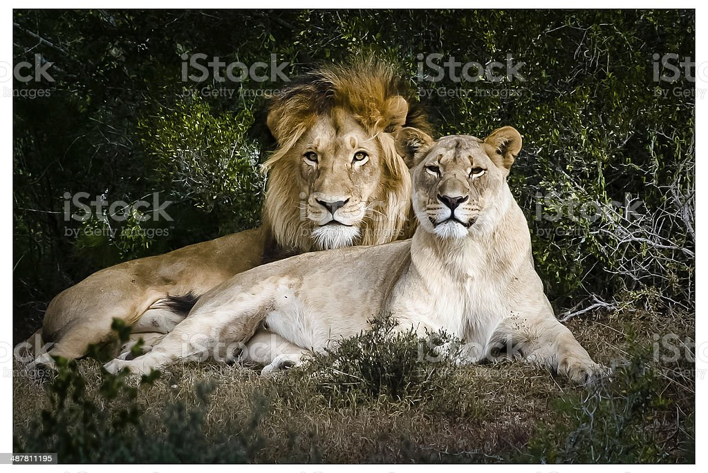
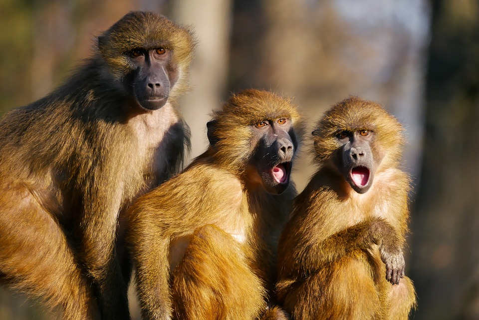
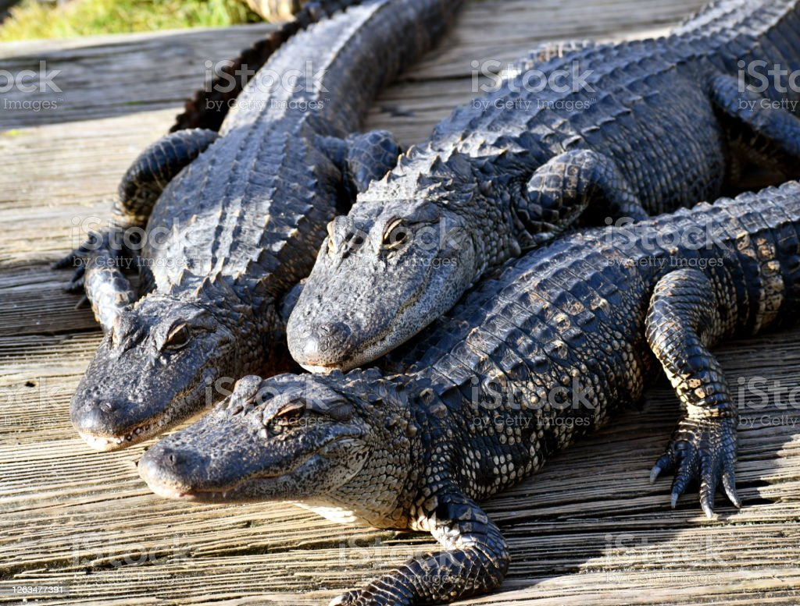

ZOO ANIMALS
Information of animals
1. Bears
Grizzly-Bear

Ollie
Mona
Grizzly bears are large and range in color from very light tan (almost white) to dark brown. They have a dished face,
short, rounded ears, and a large shoulder hump. The hump is where a mass of muscles attach to the bear's backbone
and give the bear additional strength for digging. Ollie and Mona are playful cubs.
2. Giraffes
Taking a walk

Frankie
Coconut
Giraffes are one of the most iconic animals in the zoo, and for good reason. With their long necks and spotted coats,
they are a sight to behold. Giraffes are the tallest land mammal, reaching heights of up to 18 feet. They are
herbivores, meaning they feed on leaves, twigs, and fruits from trees. Giraffes are social animals, living in herds
of up to 20 individuals. They communicate with one another using a variety of vocalizations and body language. Frankie and Coconut are friendly and curious about their surroudings.
3. Lions
Lions in shade

Mella
Karl
Lions are unique among cats in that they live in a group, or pride. The members of a pride typically spend the day in
several scattered groups that may unite to hunt or share a meal. A pride consists of several generations of
lionesses, some of which are related, a smaller number of breeding males, and their cubs. Mella and Karl enjoying afternoon rests.
4. Monkeys
Monkeys-Baboons

Cookie
Earl
Banana Pudding
Baboons are some of the most identifiable of the monkey world. They have tufts of hair on either side of their faces
and large, hairless bottoms that can turn red. These old-world monkeys also do not have prehensile tails like some
other monkeys, which means they don't use their tail like a hand. Cookie, Earl, and Banana Pudding are playful, witty, and pranky.
5. Alligators
Three-alligators-on-a-dock

Wren
Aspen
Mika
The average adult size for a female is 8.2 feet (2.6 meters), and the average size for a male is 11.2 feet (3.4
meters). Exceptionally large males can reach a weight of nearly half a ton or 1,000 pounds (454 kilograms). The
American alligator is found in the United States from North Carolina to the Rio Grande in Texas.
Wren, Aspen, and Mika enjoying sunbathing.